공시 기반 상장사 재무위험 조기경보(dintel)와 소상공인 공정신용 진단(신용캐드)을 하나로 합친 사업.
이 보고서는 함께 제출하는 모션그래픽 영상과 AI 영상의 내용(이유 · 내용 · 근거 · 계획 · 절차)을 글과 그림으로 정리한 것이다.
0.68공시 기반 조기경보 AUC (가격만 0.55 · 코스닥 표본외)
3.2배경고 상위 10%의 실제 위험률 19.6% vs 평균 6.1%
-27%소형사 오경보 감소 25.5% → 18.5% (공정 → 결합)
217곳첫 공개 성적표 경고 (2026-10, 해시 봉인)
작성일 2026-10 · 모든 실측 수치는 저장소 econ-lab의 코드로 재현 가능(부록 B) ·
표시 규칙: 실측 이 저장소 코드로 계산 확인 외부 공개 자료 추정 검증 전 가정
목차
0. 한눈에 보기 1. 이유: 무엇이 문제인가 2. 고객: 누가, 왜 돈을 내나 3. 내용: 제품 4. 근거: 왜 믿을 수 있나 5. 결합 검증: 신용캐드 × dintel
6. 소상공인 공정신용 진단 7. 경쟁과 차별화 8. 수익 모델과 가격 9. 계획과 절차 10. 리스크와 한계 11. 제출 영상 2편 부록 A 출처 · 부록 B 재현 방법
0. 한눈에 보기
한 문장: 위험한 회사는 공시 속에서 먼저 신호를 보내고, 작은 사업자는 재무만 보는 평가에서 과하게 의심받는다. 우리는 이 둘을 같은 방법으로 풀어,
"왜 위험한가 / 왜 점수가 낮은가"를 실제 결과로 검증된 확률과 근거로 제공한다. 매수·매도 의견은 내지 않는다.
구분
내용
문제
가격 정보만으로는 위험을 못 본다(AUC 0.55). 공시는 26만 6천 건(코스닥)으로 많고, 핵심 조건은 원문 속에 있다. 소상공인은 "점수가 낮은 이유"를 설명받지 못한다.
해법
공시 원문 조건 파싱 + 시점 고정(PIT) 집계 → 재무위험 조기경보 점수, 공시 반응 통계, 자금조달 연쇄 분석. 소상공인에게는 전통·공정·상권 반영 세 점수와 그 차이의 이유.
근거 실측
코스닥 경고 상위 10%의 12개월 실제 위험 공시율 19.6%(평균의 3.2배, 전체 위험의 32% 포착). 상장폐지 기업 497곳을 채워 넣어도 3.2배 유지, 상위 10% 실제 위험률은 27.0%. 실제 위험 사건의 34%를 평균 10개월 전에 경고(위험 없던 기업은 12%만 경고 노출). 공시 연쇄를 더하면 소형사 오경보 26.4% → 18.5%, 정확도 0.663 → 0.669.
소상공인 실데이터 실측
서울 인허가 89만 곳의 실제 폐업으로 사전 등록 가설 채점: 공개 데이터의 업소 단위 예측력은 낮다(AUC 0.56~0.62, 상권·동네 매출도 보탬 적음). 반면 브랜드는 강한 신호 — 프랜차이즈 카페 1년 폐업 6.2% vs 독립 15.7%, 쇠퇴 브랜드 가맹점은 성장 브랜드의 2.6~7.1배(카페·음식점 재현). → 신규 모듈 '브랜드 건강도'(6-2).
고객
1순위 주식담보대출·메자닌 심사(증권사·캐피탈·저축은행) → 중소형 운용사 → 데이터 플랫폼 API → 상장사 IR. 소상공인 리포트는 같은 여신기관 채널로.
돈 추정
Risk Desk 연 1,200만~3,000만 원, Team 계정당 연 240만 원, API 연 2,400만 원+. 1년 차 약 9,400만 원, 국내 SAM 약 40억 원.
신뢰 장치
매달 경고 목록을 SHA-256으로 봉인해 공개하고 12개월 뒤 자동 채점하는 공개 성적표(2026-10 첫 발행: 코스닥 144곳, 코스피 73곳).
다음
운영 모델 퇴출 기업 포함 재학습 완료(10/10) → 11월 기관 2곳 무상 파일럿 → 2027 상반기 첫 유료 계약. (생존편향 보정은 10/09 완료)
1. 이유: 무엇이 문제인가
① 위험은 가격보다 공시에 먼저 나타난다 실측
다음 12개월 안에 관리종목·상장적격성·감사의견·상장폐지·불성실공시 공시가 나오는지를 예측했다. 2020년까지로만 학습하고 2022년 1월부터 검증했다(정답 기간이 겹치지 않게 2021년은 비움).
시가총액·1년 수익률·변동성 같은 가격 정보만으로는 AUC 0.55로 무작위(0.50)와 거의 같았고, 공시 정보로는 0.68이었다.
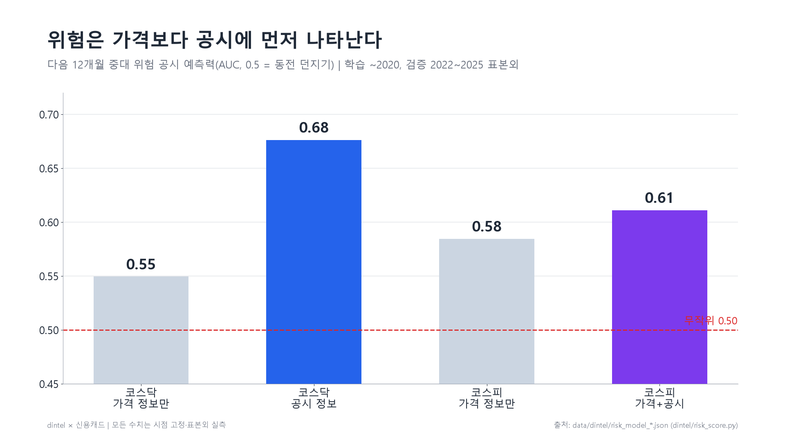
그림 1. 가격 vs 공시 기반 조기경보의 예측력. 출처: data/dintel/risk_model_*.json
② 공시는 많고, 중요한 건 원문 깊숙이 있다 실측
코스닥 공시만 2015년 이후 26만 6천 건. 관심목록 데스크 실측에서 제목·유형만 보고 거르면 큰 급락(20일 -15% 이하)의 9~13%만 잡혔다(코스피 8.5%, 코스닥 12.9%).
2026년 2월 상장폐지 요건 강화 이후 2025사업연도 상장폐지 사유 발생: 코스닥 42곳, 코스피 12곳. 코스닥 시가총액 기준 미달 약 370곳.
동전주·시총 요건은 유예와 법원 판결(10/2)로 흔들리는 중 — 규칙 변화와 무관하게 "어느 회사가 위험한가"를 공시로 판단할 필요가 커졌다.
증권사 신용융자·주식담보대출 하루 평균 약 62조 원(2026년 2분기). 위험을 미리 아는 일에 직접 손실이 걸려 있다.
④ 동네 사업자는 "왜 낮은지"를 듣지 못한다 실측·인터뷰
신용캐드 팀의 헬스장 사장님 인터뷰에서 세 장벽이 반복됐다: 담보가 남지 않는다(초기 시설투자), 비수기의 역설(운영자금이 필요할 때 매출이 줄어 심사가 더 불리), 투자가 안 보인다(운동기구·인테리어 미반영). 문제는 점수가 낮다는 것보다 왜 낮은지 설명되지 않는다는 것이었다.
2. 고객: 누가, 왜 돈을 내나
순위
고객
지금 하는 일
우리가 바꾸는 것
지불 근거
1
주식담보대출·메자닌 심사 증권사 신용공여, 캐피탈·저축은행, CB/BW 펀드
심사역이 담보 종목·발행사 공시를 읽어 판단
기업별 12개월 위험 점수 + 근거 공시 + 자금조달 원문 조건
한 건의 담보 부실을 줄이는 가치 > 연 구독료 추정
2
중소형 운용사 리서치·리스크·컴플라이언스
보유·관심 종목 공시를 매일 사람이 확인
아침 데스크 브리프, 위험 상위 표시, 처리 기록
인력 시간 절감. 운용사 507곳 중 32% 적자 확인
3
데이터·플랫폼 MTS, 금융 AI, 신평사, 회계법인
넓은 데이터는 있으나 검증된 경고 신호는 없음
위험 점수·반응 통계 API
자체 개발보다 싸고 과거 성적표가 있음
4
상장사 IR
자사 공시의 시장 반응을 모름
동종사 대비 공시 반응 벤치마크
법적으로 가장 깨끗한 매출
한 채널로 두 제품. 신용캐드가 1단계 유료 고객으로 정했던 저축은행·지역 상호금융·정책금융·P2P는 dintel의 1순위 고객(여신 심사)과 같은 구매자다.
같은 영업 채널에서 상장사 조기경보(지금 판매 가능)와 소상공인 공정신용 리포트(파일럿 후)를 함께 판다.
아직 검증하지 않은 것: 여신기관 쪽의 지불 의사. 인터뷰는 차입자 쪽만 했다. 새 인터뷰 대신 공개 성적표와 무상 파일럿(9장)으로 확인한다.
3. 내용: 제품
원천DART 공시(주요사항보고·거래소공시) + 원문 문서 시세는 검증용 내부 계산만, 재배포 없음
엔진유형 분류 · 원문 조건 파싱(자금조달 7,156건, 공급계약 18,121건) · 시점 고정(PIT) 집계
신호① 재무위험 조기경보 점수 ② 공시 유형별 과거 반응 통계 ③ 자금조달 연쇄(포렌식)
전달아침 데스크 브리프 · API · 공개 성적표 · 소상공인 공정신용 리포트
제품
상태
코드
재무위험 조기경보 점수 (코스닥·코스피 별도 계수, 매월 갱신)
동작 — 코스닥 1,436 / 코스피 722개 기업
dintel/risk_score.py
공개 성적표 (경고 목록 해시 원장, 12개월 뒤 자동 채점)
동작 — 2026-10 첫 발행
dintel/scoreboard.py, scoreboard/
데스크 아침 브리프 (관심목록 공시 처리 + 위험 상위 + 처리 기록)
동작(시제품)
dintel/desk.py
오늘의 공시 피드·기업 리포트 (사업 사이트)
동작
dintel/feed.py, company.py, sites/biz.py
자금조달 원문 파서 (할인율·배정 대상·리픽싱·콜/풋·쿠폰)
동작 — 7,156건
dintel/financing.py
소상공인 공정신용 진단 (전통·공정·상권 반영 + 업종 연체율)
동작(합성 데이터 MVP)
caed/service.py
API·결제·계정, 배정 대상 네트워크
계획
—
하지 않는 것: 매수·매도·목표가 의견, 개인 이름·"세력" 같은 단정 표현, 원시 시세 재배포, 개인 매매용 엔진 점수 사용.
4. 근거: 왜 믿을 수 있나 (모두 시점 고정, 표본외)
4-1. 재무위험 조기경보 실측
시장
모델
검증 AUC
상위 10% 위험률
평균
배수
포착률
코스닥
가격만
0.55
9.1%
6.1%
1.5배
—
코스닥
공시
0.68
19.6%
6.1%
3.2배
32%
코스닥
공시 · 심각 위험만
0.70
6.1%
1.8%
3.3배
—
코스피
가격+공시
0.61
10.8%
5.0%
2.2배
22%
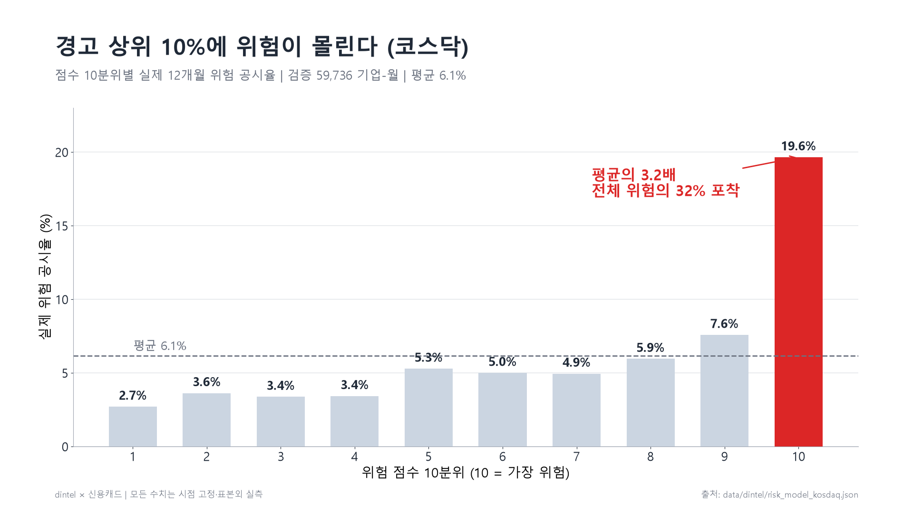
그림 2. 위험 점수 10분위별 실제 위험 공시율(코스닥). 1~9분위는 2.7~7.6%로 비슷하고 10분위만 19.6% — "상위 10% 경고 목록"이 맞는 제품 형태다.
위험을 올리는 요인(코스닥, 표준화 계수 순): 최대주주변경, 자금조달, 대표이사변경, 손익구조 30% 이상 변동, 과거 위험 공시 이력, 만기 전 사채 취득, 최근 90일 조달.
4-1b. 생존편향 보정 실측
패널이 현재 상장사 기준이라 이미 퇴출된 기업이 빠져 있었다. 공공데이터 키 없이 DART만으로 보정했다: 2015년 이후 시장조치 공시를 분기별로 훑어 제출인이 '코스닥시장본부'이고 현재 패널에 없는 497곳을 찾고, 이들의 공시 9만 2천 건을 모아 기업-월 3만 1천 개를 추가했다(피처는 공시 건수만, 양쪽 동일).
방식
검증 위험률
AUC
상위 10% 실제 위험률
배수
포착률
A 현재 상장사만(기존)
6.1%
0.678
19.5%
3.2배
32%
B 퇴출 기업 포함(보정)
8.5%
0.671
27.0%
3.2배
32%
C 기존 방식 학습 → 실제 세상 검증
8.5%
0.660
26.9%
3.2배
32%
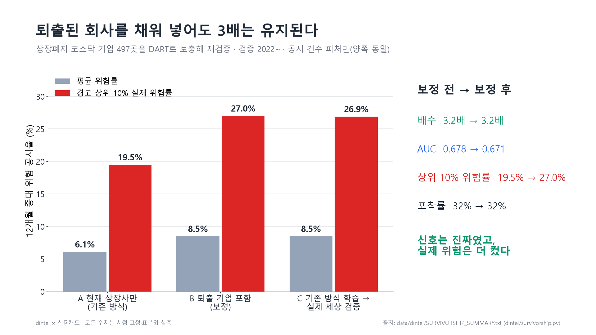
그림 3. 생존편향 보정 전후. 신호(배수·포착률)는 생존편향의 산물이 아니었고, 실제 위험 수준은 더 높았다 — "경고 상위 10% 기업의 약 4분의 1이 1년 안에 중대 위험 공시". 남은 한계: 퇴출 기업 상장 기간은 공시로 근사, 가격 피처 없음.
코스피도 같은 방법으로 보정(퇴출 198곳): AUC 0.625 → 0.636, 상위 10% 13.1% → 15.3%, 배수 2.6배 유지(기존 방식 학습 → 실제 세상 검증 시 2.8배). 두 시장 모두 신호는 생존편향의 산물이 아니다.
4-1c. 배정 대상 네트워크 — 사전 가설 기각 실측
자금조달 원문에서 조합·운용사·법인 대상자 3,782곳을 뽑아(개인·신탁업자 제외) "과거 투자처가 위험 공시를 냈던 대상자가 들어오면 위험하다"를 검증했다 → 기각(AUC 0.676 → 0.675). 사후 탐색에서는 반대로 이력 없는 신생 대상자만 들어온 경우가 위험했다(검증기 20.9% vs 이력 있는 대상자 9.9%). 결과를 보고 세운 가설이라 채택하지 않고 scoreboard/HYPOTHESES.md에 사전 등록해 2027년 이후 데이터로만 판정한다.
4-1d. 매달 꾸준했는가 · 얼마나 미리 알려 주나 실측
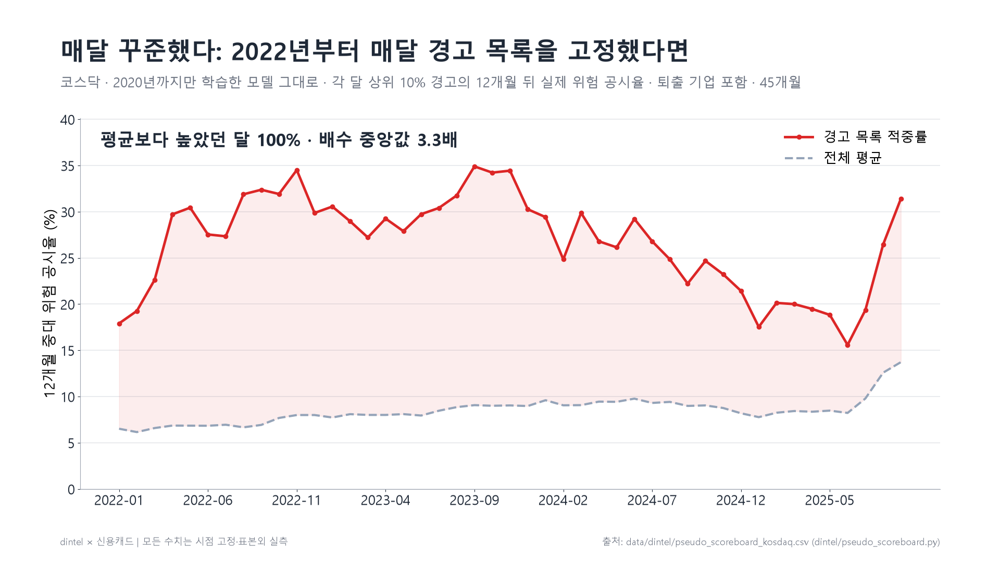
그림 4. 가상 성적표. 2020년까지 학습한 모델을 고치지 않고 2022-01부터 매달 상위 10%를 경고 목록으로 고정했다면 — 45개월 모두 평균보다 높았고 96%의 달에서 2배 이상(배수 중앙값 3.3배, 최저 1.9배). 코스닥, 퇴출 기업 포함.
경고 선행 기간 (코스닥, 표본외·퇴출 포함)
값
실제 위험 사건 549건 중 사건 전 12개월 안에 경고된 비율
34%
같은 기간 위험 사건이 없던 기업이 한 번이라도 경고된 비율
12%
첫 경고 → 실제 사건 (중앙값)
9.9개월
3개월 이상 앞서 경고한 비율
83%
코스피는 사건 기업과 무사 기업의 경고 노출 차이(31% vs 25%)가 작아 근거로 쓰지 않는다. (dintel/lead_time.py, dintel/pseudo_scoreboard.py)
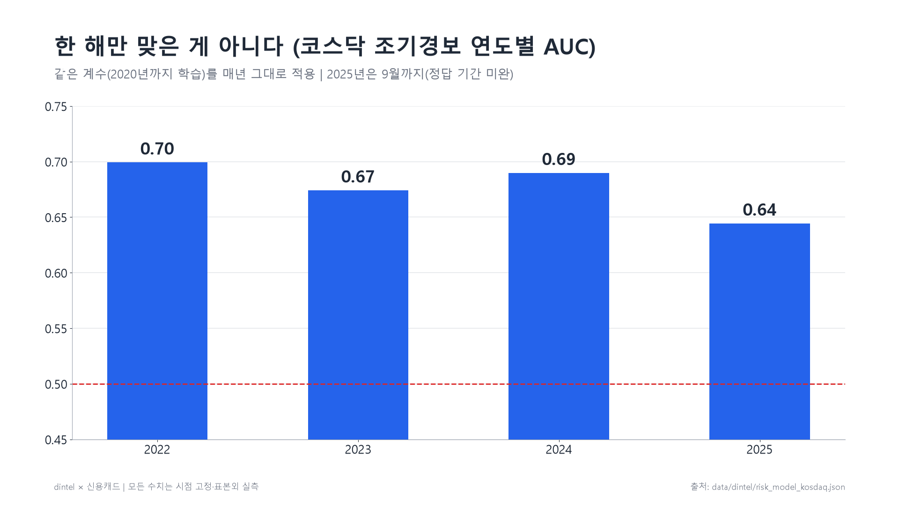
그림 5. 연도별 AUC 0.64~0.70 — 같은 계수를 매년 그대로 적용.
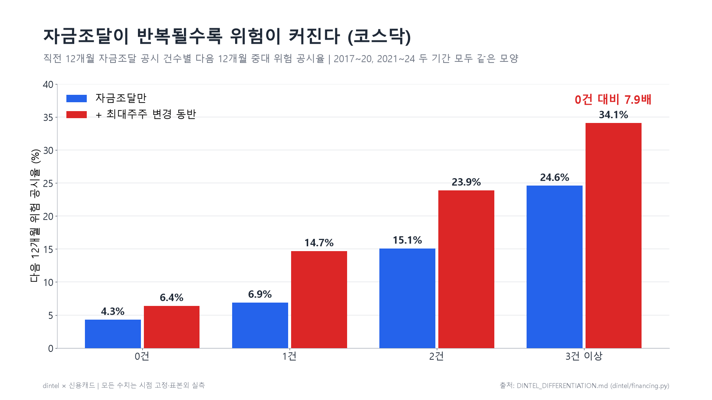
그림 6. 자금조달 연쇄. 직전 1년 3건 이상 24.6%(5.7배), 최대주주 변경 동반 34.1%(7.9배). 2017~20 / 2021~24 두 기간 모두 같은 모양.
4-2. 공시 반응 통계 실측
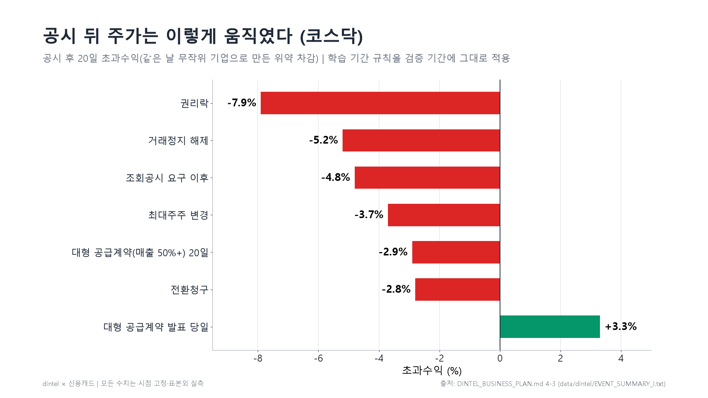
그림 7. 코스닥 공시 후 20일 초과수익(같은 날 무작위 기업 위약 차감). 대형 공급계약은 발표 직후 +3.3% 뒤 20일 동안 -2.9%로 되돌아갔다.
4-3. 공시 데이터의 정량 가치 실측
별도로 운영하는 주가 예측 연구 엔진에 공시 이벤트 피처 49개를 넣었을 때, 2018~2026 워크포워드 표본외 상위 30종목 초과수익 IR이 코스피 1.46 → 1.65(잎 31, 시드 3개 범위 분리), 코스닥 1.42 → 1.71로 올랐다.
깊은 트리(잎 63)에서는 효과가 없었다(1.51 → 1.52) — 효과는 모델 구조에 따라 다르다는 것까지 그대로 보고한다. (엔진은 별도 제품이며 여기서는 데이터 가치의 증거로만 인용)
4-4. 분기 실적 공시 뒤 시장 반응 — 사전 등록 3건 중 1건 성립 실측
DART 다중회사 주요계정으로 2016~2026년 2,408개사 81,544개 분기 실적을 모았다(접수일 다음 날부터만 사용).
분기 영업이익의 '예상 밖 변화'(전년 같은 분기 대비 증감 ÷ 과거 8분기 증감의 표준편차) 상위 10% 기업은 보고서 접수 다음 날 종가에 따라 들어가도
60거래일 동안 시장보다 평균 +2.9%, 하위 10%는 -3.0%였다(코스닥, 거래대금 5억 이상, 32개 분기 코호트, t 5.1, 2022년까지·2023년 이후 모두 같은 방향. 코스피 차이 +3.5%, t 3.0).
결과를 보기 전에 가설과 판정 기준을 커밋으로 고정했고, 같은 날 함께 등록한 두 가설은 그대로 기각으로 보고한다:
① 이 신호만으로 만든 포트폴리오는 잡음이 커서 독립 전략이 되지 못했다(코스닥 정보비율 0.37, 2022년까지는 음수),
② 분기 피처를 예측 엔진에 넣어도 사전 기준(표준 잣대 IR)을 넘지 못했다.
그래서 이 통계는 '매매 신호'가 아니라 dintel 기업 리포트의 근거 카드로 쓴다 — 정기보고서가 뜨면 그 분기의 서프라이즈 분위와 과거 같은 분위의 60일 반응을 함께 보여 준다.
5. 결합 검증: 신용캐드 × dintel 실측
실험장은 정답이 있는 코스닥 상장 소형사다(소상공인 아님). 목표는 다음 12개월 중대 위험 공시, 학습 2020-04~2022-12, 1년 비움, 검증 2024-01~2025-09(기업-월 2만 1천 개).
모델
AUC
상위 10% 위험률
규모 의존도
오경보 소형 / 대형
위축 업종 AUC
① 전통(재무 9개 = 신용캐드 ①)
0.663
16.8%
-0.39
26.4% / 2.5%
0.680
② 공정(업종 조정 = 신용캐드 ③)
0.662
16.9%
-0.38
25.5% / 2.2%
0.681
③ 공정 + 공시 연쇄(dintel)
0.669
17.4%
-0.23
18.5% / 3.6%
0.692
공시만
0.630
17.4%
-0.22
18.4% / 3.5%
0.637
규모 편향은 실제로 있다. 재무만 보면 소형사 오경보 26.4%, 대형사 2.5%(약 10배) — 신용캐드 핵심 가설의 첫 실데이터 확인.
업종 충격 보정만으로는 바뀌지 않는다(0.663 → 0.662) — 효과 없는 방법은 버렸다.
공시 연쇄를 더하면 더 정확하면서 덜 불공정해진다.
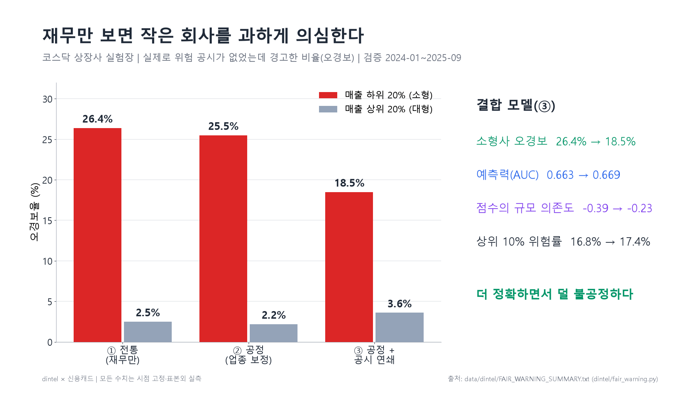
그림 8. 모델별 오경보율(매출 하위 20% vs 상위 20%).
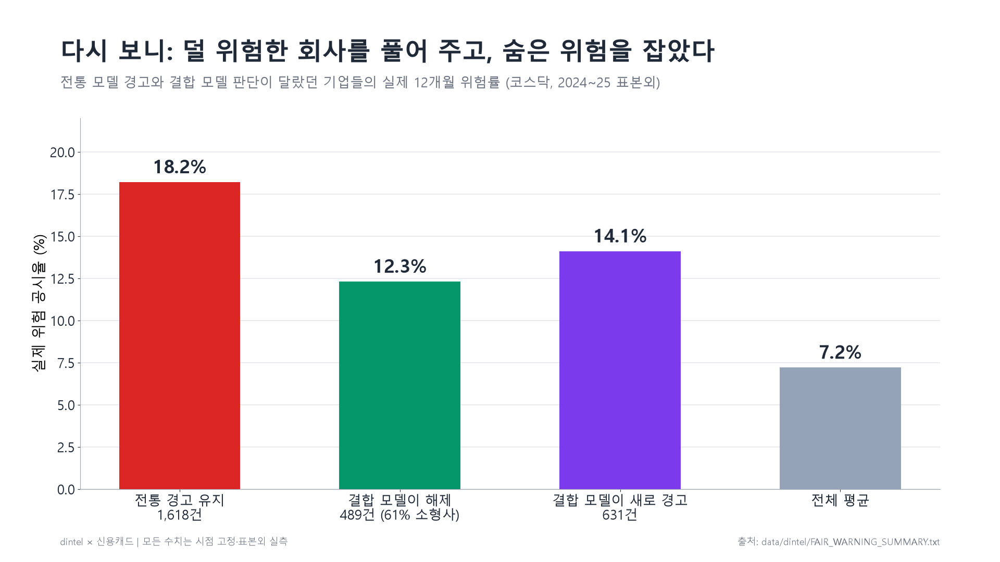
그림 9. 판단이 달랐던 기업-월의 실제 위험률. 결합 모델이 해제한 489건(61% 소형사)은 12.3%로 계속 경고한 쪽(18.2%)보다 낮았고, 새로 경고한 631건은 14.1%로 평균(7.2%)의 2배였다. 해제된 쪽도 평균보다는 높으므로 "안전"이 아니라 "추가 심사 후보"로 표현한다.
소상공인으로 옮길 때: 개별 사업자의 이벤트 신호가 규모 편향을 줄이는 열쇠일 가능성이 크다. 후보는 사업자 상태(휴폐업)·대표자·업종 변경(국세청 상태조회), 카드매출 급변(동의 기반), 상권 변화지표, 업종별 연체율(보유 데이터).
6. 소상공인 공정신용 진단 (신용캐드)
같은 재무정보를 두 번 평가한다. 은행식 전통 점수(OLS 프로빗)와, 매출에 섞인 규모·경기 영향을 도구변수로 걷어 낸 공정 점수(IV 프로빗). 가까운 역·상권을 넣으면 서울시 상권 실측(추정매출·폐업률·포화도)을 반영한 세 번째 점수(공정 70% + 상권 30%)와, 한국은행 업종 연체율을 참고 지표로 보여 준다. 사업 사이트(:8766)에서 바로 동작한다.
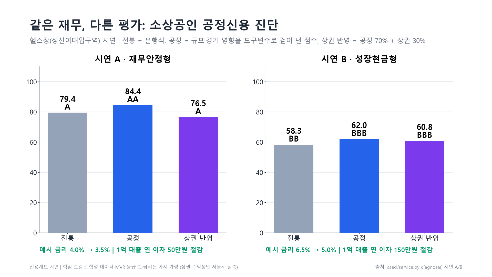
그림 10. 헬스장(성신여대입구역) 시연. 재무안정형 A: 79.4(A) → 84.4(AA), 예시 금리 4.0% → 3.5%로 1억 원 대출 연 이자 50만 원 절감. 성장현금형 B: 58.3(BB) → 62.0(BBB), 150만 원.
정직한 표시: 핵심 점수 모델은 아직 합성 데이터로 만든 시제품(MVP)이며 등급 컷과 금리는 예시 가정이다. 실제 정답으로 확인된 것은 5장의 상장 소형사 결과와 6-1의 서울 소상공인 폐업 데이터다(상환 결과는 아직 없음). 다음 단계는 파일럿 기관의 실제 상환 결과를 모으는 데이터 플라이휠이다. 2026-10-08 이식 과정에서 상권 수익성이 모든 지역에서 평균값(62.5점)으로 떨어지던 버그(따옴표로 감싼 CSV 값)를 찾아 고쳤다.
6-1. 실데이터 검증: 서울 소상공인 894,933곳의 실제 폐업 실측
신용캐드 인터뷰의 질문 — "작고 업력이 짧으면 정말 위험한가", "상권을 보면 더 잘 가려내나" — 를 공공데이터로 채점했다. 서울 열린데이터광장 지방행정 인허가(LOCALDATA, 공공누리) 10개 업종의 인허가일·폐업일·면적·좌표로, 매년 말 영업 중인 업소가 다음 12개월 안에 폐업했는지 본다(학습 ~2019, 검증 2021~24). 가설은 모두 결과를 보기 전에 커밋으로 등록했다.
업종
업소
폐업률
업력 <1년
10년+
면적 하위 20%
상위 20%
대장 포착률
일반음식점
539,188
10.6%
14.7%
7.2%
14.2%
8.3%
76%
휴게음식점(카페 등)
147,814
13.0%
15.1%
9.1%
11.1%
10.7%
131%
미용실
100,054
7.8%
9.8%
4.5%
9.1%
8.6%
167%
의원
37,723
2.3%
2.8%
2.2%
—
—
133%
이용원
15,641
7.7%
15.6%
6.0%
11.0%
7.3%
—
세탁소
15,365
6.7%
11.3%
6.2%
7.5%
6.8%
60%
당구장
14,041
5.3%
4.7%
5.6%
—
—
15%
단란주점
11,616
5.0%
1.6%
5.2%
6.6%
5.7%
—
헬스장(체력단련장)
7,343
2.9%
1.9%
3.3%
3.4%
1.4%
17%
체육도장(태권도 등)
5,729
2.9%
4.3%
2.6%
—
—
—
헬스장의 첫 발견은 일반화되지 않았다. 처음 헬스장 7,155곳에서 '업력이 짧아도 더 망하지 않는다'를 봤지만, 같은 질문을 9개 업종에 던진 사전 가설 3개는 모두 기각됐다(업력 2/9, 큰 곳이 가장 안전 2/6, 소형 과잉 경고 1/6). 음식점·카페·미용·이용·세탁에서는 젊고 작은 가게가 실제로 더 문을 닫는다.
데이터의 한계도 쟀다. 대장 포착률(인허가 대장의 폐업 / 서울 상권분석의 폐업, 2023)이 헬스장 17%, 당구장 15%로 낮다 — 양도(지위승계)와 방치는 폐업으로 잡히지 않는다. 헬스장 결과는 이 한계 때문에 믿기 어렵고, 음식점(76%)·세탁(60%)이 더 믿을 만하다.
업종마다 위험의 모양이 다르다. 헬스장은 큰 곳이 안전, 음식점은 작을수록 위험, 카페는 중간 규모가 가장 위험, 미용은 U자. 업종 공통 규칙(작으면 감점)은 틀린다 — 업종별 보정이 필요하다.
상권 신호 검정
AUC 기본(면적·업력) → +상권
상위 10% 경고의 실제 폐업률
일반음식점
0.612 → 0.617
17.2% → 18.8%
휴게음식점(카페 등)
0.562 → 0.563
15.3% → 16.7%
미용실
0.593 → 0.598
9.3% → 10.6%
상권 정보는 위험 상위권만 조금 날카롭게 한다. 반경 100m 밀집도·직전 1년 주변 개폐업·자치구 폐업률을 더하면 상위 10% 경고의 적중은 1.3~1.6%p 올랐지만 전체 순위(AUC)는 +0.001~0.005에 그쳤다(사전 가설 L1 기각, L2 성립). 등록한 규칙대로 사이트의 '상권 반영 점수'를 참고 지표로 낮췄다. 주변 폐업이 많았던 곳은 다음 해 폐업이 늘었다(음식점 계수 +0.11).
동네 매출 흐름도 마찬가지다. 서울 상권분석 추정매출(카드 결제 기반, 행정동×업종, 2021~2026)로 '최근 1년 매출이 줄어든 동네·업종은 다음 1년 폐업이 많은가'를 사전 등록(S1·S2) 후 봤다. 매출이 가장 줄어든 20% 칸의 폐업률은 10.5%, 가장 늘어난 20%는 9.7%로 1.08배뿐이었고(기준 1.2배), 예측 순위도 그대로였다(+0.000) — 둘 다 기각. 동네 폐업은 업종 평균과 직전 개폐업(손바뀜)으로 대부분 설명된다. 동네 합계 매출은 가게 하나의 현금흐름을 대신하지 못한다.
결론: 공개 데이터만으로는 소상공인 폐업을 잘 가려내지 못한다(AUC 0.56~0.62). 실제 영업 흐름(카드매출·계좌 현금흐름)이 필요하다. 미국 소상공인 대출 연구(Hair·Howell·Johnson·Matsumoto, NBER WP 33367, 2025)도 신용점수가 젊은 사업자를 체계적으로 낮게 보고, 최근 현금흐름 데이터를 더하면 위험을 늘리지 않고 승인이 는다고 보고했다. 그래서 다음 단계는 기관 파일럿으로 영업 데이터를 확보하는 것이다.
제품 반영: 진단 화면에 업종·업력·면적을 넣으면 서울 동종 업소의 실제 1년 폐업률(예: 헬스장 업력 1~3년 2.9%, 음식점 면적 하위 20% 14.2%)을 점수 옆에 보여 준다. 대장 포착률이 낮은 업종은 그 한계를 함께 표시하고, 점수에는 섞지 않는다(caed/industry_benchmark.py).
헬스장의 사후 발견은 H-2026-10-C로 봉인해 두었고(4,416곳, 2027-10 채점), 대장 포착률의 한계와 함께 보고한다.
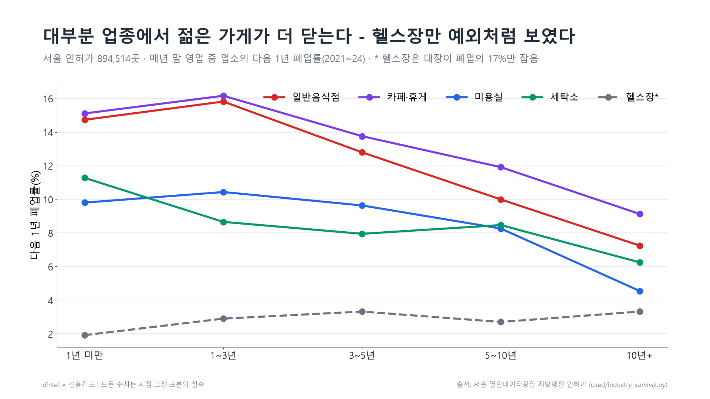
그림 12. 업종별 업력에 따른 다음 1년 폐업률(서울 인허가 894,933곳, 2021~24). 대부분 업종에서 젊은 가게가 더 닫는다. 헬스장(점선)은 대장이 폐업의 17%만 잡아 예외처럼 보였을 가능성이 크다.
6-2. 가맹점과 브랜드 건강도 — 실데이터가 가리킨 더 강한 신호 실측
공개 데이터로 소상공인을 가르는 힘이 약하다는 결론 뒤에, 대출 심사에서 쉽게 얻을 수 있는데 아직 안 본 정보를 찾았다: "어느 브랜드의 가맹점인가." 서울 인허가 상호에서 브랜드를 추정해(띄어쓰기·붙여쓰기 모두, 학습기에 30곳 이상인 브랜드) 같은 방식으로 채점했다. 가설은 카페로 먼저 등록·채점하고, 일반음식점으로 같은 정의를 다시 등록해 재현했다.
다음 1년 폐업률(2021~24)
프랜차이즈
독립
브랜드 쇠퇴 1/3
성장 1/3
AUC 업력·면적 → +브랜드
카페(커피숍 40,554곳)
6.2%
15.7%
17.5%
2.5%
0.682 → 0.778
일반음식점(539,188곳, 재현)
6.4%
10.7%
10.1%
4.0%
0.502 → 0.660
가맹점은 덜 닫는다, 특히 첫해. 1년 미만 카페: 프랜차이즈 1.7% vs 독립 16.0%. 직영 체인(스타벅스 등)을 빼도 6.8% vs 15.7%.
브랜드가 갈린다. 브랜드별 1년 폐업률은 0~24%로 퍼져 있고, 상위 25% 브랜드 평균이 하위 25%의 15배(카페)·7배(음식점)다. 브랜드 폐업률 하나를 더하면 가맹점 안의 예측력이 0.68 → 0.78(카페), 0.50 → 0.66(음식점)으로 오른다 — 지금까지 공개 데이터로 본 신호 중 가장 크다.
브랜드가 쇠퇴기면 가맹점이 닫는다. 직전 1년 서울 순증가율로 브랜드를 3등분하면, 쇠퇴 1/3 브랜드 가맹점의 다음 1년 폐업률이 성장 1/3의 7.1배(카페)·2.6배(음식점). 2014~19에도 같은 방향(2.1배·2.3배). 업력이 같은 매장끼리 비교해도 그대로다(카페 3년 이상 14.2% vs 2.1%, 음식점 1년 미만 11.3% vs 4.0%) — 쇠퇴 브랜드에 오래된 매장이 많아서 생긴 착시가 아니다. 오늘 기준 473개 브랜드의 3분위를 이름 대신 해시로 봉인했다(H-2026-10-D, 2027-10 채점).
어디까지 통하나. 미용실과 휴게음식점의 나머지 업태(제과·패스트푸드·편의점 등)로 다시 등록해 재현해 보니 4개 중 1개만 성립했다(비커피숍은 프랜차이즈가 덜 닫지만 브랜드 쇠퇴 효과는 1.7배로 기준 미달, 미용은 둘 다 기각). 그래서 브랜드 건강도는 카페·음식점(외식) 가맹점에 한정한다.
사업 의미 — '브랜드 건강도'. 은행은 이미 가맹본부와 협약해 가맹점주에게 '프랜차이즈론'을 내주며 브랜드의 안정성을 심사한다(2025년 NH농협은행·백억커피, 신한은행·피자스쿨 등). 지금 쓰이는 브랜드 통계는 가맹본부가 스스로 내는 정보공개서(1년 늦음)다. 우리는 독립된 공공 기록으로 매달 갱신하고, 예측력을 사전 등록으로 검증했다. 첫 고객 후보: 프랜차이즈론 심사팀, 지역신용보증재단, 예비 창업자.
외부 검증 — 공정위 정보공개서(10-21). 공정거래위원회 가맹 브랜드 목록(2017~2026)과 대조했다. 상호로 추정한 브랜드의 74%(카페)·87%(음식점)가 실제 등록 가맹 브랜드였고, 나머지는 대부분 정보공개서 대상이 아닌 직영 체인이었다. 반면 서울에서 매장이 줄어드는 브랜드도 2년 안에 등록을 거의 유지했다(브랜드-연 470건 중 이탈 4건, 쇠퇴 1/3에서는 158건 중 2건) — 공식 목록은 쇠퇴를 알려 주지 않는다. 브랜드 나이(가맹사업 개시일)는 위험 신호가 아니었다(오히려 10년 이상 브랜드 가맹점이 더 닫음, 사전 가설 기각).
양도·갈아타기 실측(10-21). 폐업한 가맹점 자리(10m 이내)에 6개월 안에 같은 브랜드가 다시 열린 경우(양도로 봄)는 3~4%뿐이었고, 이를 빼도 쇠퇴/성장 격차는 그대로였다(카페 17.0% vs 2.2%). 다른 브랜드로 간판을 바꾼 경우는 13~17% — 이런 '갈아타기'가 많은 브랜드의 가맹점이 더 닫았지만(12.0% vs 2.7%), 순증가율에 더한 예측력은 없어(AUC +0.007) 설명 지표로만 쓴다.
은행이 얻는 돈 [추정 포함]. 4대 은행 프랜차이즈론은 2021년 1,331건에서 2025년 8월 453건으로 줄었다. 대출 5천만 원, 폐업 시 부도 50%·손실률 70%를 가정하면 1건의 1년 기대손실은 쇠퇴 브랜드 카페 약 306만 원 vs 성장 브랜드 44만 원 — 같은 금리를 매기면 성장 브랜드 점주가 연 2~5%p를 대신 내는 셈이다. 폐업률만 실측이고 부도·손실률은 파일럿에서 실제 연체로 바꾼다.
한계. 서울·외식 한정. 브랜드는 상호에서 추정했다. 폐업은 부도가 아니다. 브랜드 이름은 판정(2027-10) 전까지 공개하지 않는다.
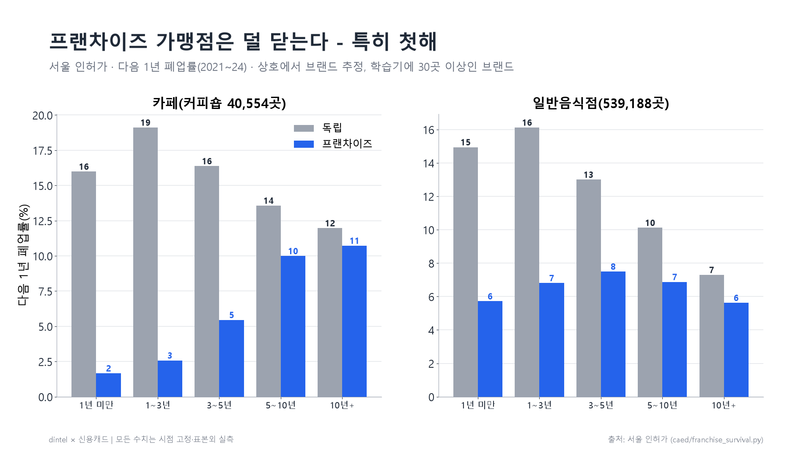
그림 13. 프랜차이즈 가맹점과 독립 업소의 업력별 다음 1년 폐업률(서울 인허가, 2021~24).
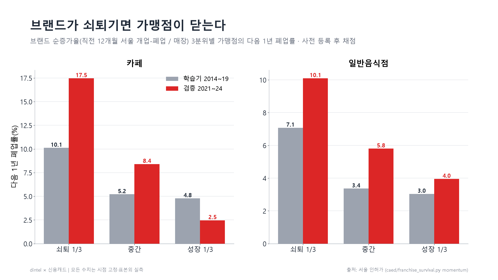
그림 14. 브랜드 순증가율 3분위별 가맹점의 다음 1년 폐업률. 학습기와 검증 기간 모두 쇠퇴 브랜드 가맹점이 더 닫는다.
공개 상가정보(소상공인시장진흥공단, 2026-06)로 '대장의 영업 중'이 실제로 있는지 업소 단위로 대조하려 했지만, 위치·상호 대조가 산 업소와 죽은 업소를 충분히 가르지 못해(2025년 새로 연 헬스장도 상호 일치 47%) 유령 인허가 비율은 측정하지 못했다 — 공개 목록으로 사업장 실재를 확인하는 상품은 근거가 약하다.
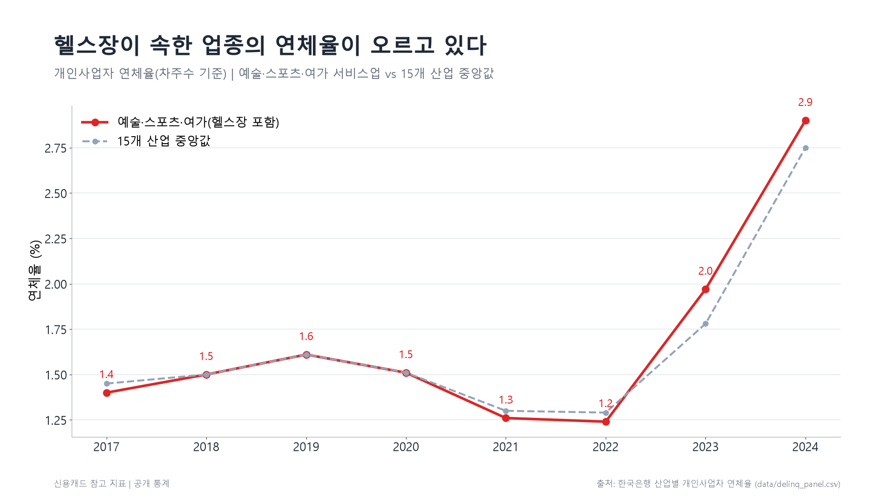
그림 11. 헬스장이 속한 예술·스포츠·여가 서비스업 개인사업자 연체율(2024년 2.9%, 15개 산업 중 4위, 2022년부터 상승). 점수에는 아직 넣지 않은 참고 지표.
7. 경쟁과 차별화
딥서치
MTS·포털 AI 요약
FnGuide 등 단말
dintel
판매하는 것
넓은 데이터 + 검색·챗
공시 요약 문장
재무·컨센서스 데이터
검증된 위험 확률과 근거
원문 조건 파싱
일부
요약
제한적
자금조달·공급계약 조건
과거 적중률 공개
없음
없음
해당 없음
공개 성적표(사전 해시 봉인)
LLM 사후 지식 편향
위험 있음
위험 있음
—
규칙·통계 기반, 시점 고정
딥서치(2013년 설립, 약 22명, 매출 약 50억, 누적 투자 약 130억 확인)는 "넓게"를 판다. 우리는 "코스닥 위험 하나를 깊게, 적중률과 함께" 판다 — 그래서 딥서치·MTS는 경쟁자이기 전에 API 고객 후보다.
해자는 ① 원문 조건 데이터(배정 대상 네트워크), ② 시간이 지날수록 쌓이는 공개 성적표(후발 주자는 소급 불가), ③ 시장별 검증 방법론.
8. 수익 모델과 가격 추정
상품
대상
가격
포함
Risk Desk
증권사 신용공여·캐피탈·메자닌 펀드
연 1,200만~3,000만 원
전 상장사 위험 점수 월간 + 일간 알림, 근거 공시, 원문 조건, 성적표
Team
중소형 운용사
계정당 연 240만 원(3계정부터)
관심목록 데스크 브리프, 위험 상위, 처리 기록
API
MTS·금융 AI·신평사·회계법인
연 2,400만 원 + 호출량
위험 점수·반응 통계(원시 시세 제외)
IR
상장사
연 360만 원부터
공시 반응 벤치마크
무료
누구나
0
오늘의 공시 피드, 공개 성적표(집계판)
1년 차 목표
금액
Risk Desk 2곳 × 2,000만
4,000만
Team 5곳 × 3계정 × 240만
3,600만
IR 5곳 × 360만
1,800만
합계
약 9,400만 원
국내 SAM (아래에서 위로)
연 규모
운용사 150곳 × 720만
약 10.8억
대출·메자닌 100곳 × 2,000만
약 20억
IR 2,500곳 × 10% × 360만
약 9억
합계
약 40억
가격 기준점 확인: FnGuide DataGuide 첫 계정 연 720만 원, 아이투자 월 9만 원. 비용은 서버(월 수만 원)와 KRX 시세 라이선스(견적 필요), 인건비는 창업자 본인 — Risk Desk 1곳이면 라이선스 제외 고정비를 넘는다. 성과보수(수익률 연동)는 투자일임·자문 해석 위험 때문에 쓰지 않는다.
9. 계획과 절차
시기
할 일
산출물
~10/18
생존편향 보정·배정 대상 묶기 완료(10/09) → 운영 모델 퇴출 기업 포함 재학습 완료(10/10), 근거 한 장 정리
SURVIVORSHIP / NETWORK_SUMMARY
10/19~10/26
모션그래픽 영상, AI 영상, 이 보고서, 데모 사이트
제출물 3종
10/16·10/18
완료: 관심기업 실시간 공시 경보(1분 안 포착), 파일럿 제안서 1장, 시세 이용 문의 문안(거래소·데이터 벤더·토스)
시제품 · 제안서
11월
법령해석 회신 확인 후 무료 공개판, 기관 2곳 무상 파일럿 3개월 — 상장사 경고는 성적표로, 소상공인 리포트는 상환 결과 회수로 검증
파일럿 계약
11월
상용 시세 라이선스 견적 → 가격·손익분기 재계산
견적서
2027 상반기
첫 유료 계약, 예비창업패키지 지원 여부 결정(사업자 등록 전 지원 조건 주의)
—
파일럿 설계(제안서 요약) — 기관 2곳과 무상 3개월. 시작일에 경고 목록을 해시값으로 봉인해 먼저 건네고,
3개월·12개월 뒤 실제 위험 공시(관리종목·감사의견·회생·대규모 희석 등 사전 정의 목록)로 함께 채점한다. 결과가 나빠도 그대로 공개한다.
마지막 주에 지불 의사와 가격대를 묻는다 — 사업계획의 가장 큰 미확인 항목(여신기관 쪽 지불 의사)을 이 설문으로 확인한다.
차주 개인정보는 받지 않고 관심기업 목록(종목코드)만 받는다. 시세 기반 화면은 상용 라이선스를 받기 전까지 쓰지 않고 공시(DART) 기반 기능만 제공한다.
어떻게 검증하며 만들었나
원천 확보 — DART 공시 26만 건(코스닥), 자금조달·공급계약 원문 2만 5천 건 파싱.
사건 연구 — 공시 유형별 반응을 같은 날 무작위 기업(위약)으로 차감, 학습 기간에 정한 규칙을 검증 기간에 그대로 적용.
조기경보 모델 — 시점 고정 기업×월 패널 13만 행(코스닥). 2020년까지 학습, 2022년부터 검증. 가격만 / 공시만 / 둘 다를 같은 잣대로 비교.
사전 고정 성적표 — 경고 목록을 SHA-256으로 봉인해 git에 기록, 12개월 뒤 자동 채점.
시장별 계수 — 코스닥과 코스피는 같은 신호의 강도가 달라 따로 맞춘다.
두 프로젝트 결합 — 신용캐드 가설을 dintel 정답으로 검증: 맞은 것(규모 편향)은 남기고, 효과 없는 것(업종 충격만 보정)은 버리고, 개별 기업 신호(공시 연쇄)로 보완.
10. 리스크와 한계
리스크
대응
투자자문업 해당 여부
의견 없이 통계만, 단방향 전달, B2B 우선, 법령해석 요청
기업 명예훼손
"위험 공시 확률 통계" 표현만, 근거 공시 함께 제시, 개인 이름 미사용, 공개판은 집계
시세 데이터 라이선스
원시 시세 미표시, 검증 계산은 내부, KRX 견적 전 유료화하지 않음
생존편향
10/09 보정 완료(퇴출 코스닥 497곳 보충): 배수 3.2배 유지, AUC 0.678 → 0.671. 남은 한계 — 퇴출 기업 상장 기간 근사, 가격 피처 없음. 코스피도 보정(198곳, 배수 2.6배 유지). 공개 성적표로 실시간 확인
소상공인 모델
점수 모델은 합성 데이터 MVP — 실제 상환 결과로 검증 전까지 "추가 심사 근거"로만 표현. 규모·업력은 서울 10개 업종 실제 폐업으로 검증(6-1): 업종마다 모양이 달라 업종별 보정 필요, 상권 신호는 참고 수준, 공개 데이터 한계(AUC 0.56~0.62) -> 영업 데이터 파일럿
대형사 복제
성적표 이력과 원문 조건 데이터는 시간이 필요한 자산 — 대형사에는 API로 공급
11. 제출 영상 2편
① 모션그래픽 영상 — 「검증된 숫자로」 (약 7분)
사업계획서 순서(이유 → 현장 → 결합 → 제품 → 근거 → 결합 검증 → 소상공인 진단 → 성적표 → 계획 → 절차)를 21개 장면으로 옮겼다. 모든 숫자와 막대는 저장소의 결과 파일에서 직접 읽어 그리므로, 결과가 바뀌면 같은 스크립트로 다시 렌더하면 된다(scripts/render_motion_video.py → deliverables/video/motion_draft.mp4, 대본 deliverables/VIDEO_MOTION_SCRIPT.md, 자막 .srt).
그림 12. 모션그래픽 영상 21개 장면 콘티(각 장면의 마지막 프레임).
② AI 영상 — 「설명되지 않은 점수」 (약 6분 30초)
같은 사업을 사람의 문제로 보여 준다. 가상 인물 세 명 — 헬스장 사장 하윤(신용캐드 인터뷰의 세 장벽을 겪는 차입자), 저축은행 여신심사역 세진(주식담보대출 손실이 직접 걸린 1순위 고객), 창업자 민재(화자). 38개 샷, 5막 구성.
막
시간
내용
사업 대응
1. 설명되지 않은 점수
0:00–1:20
비수기 1월, 시설투자는 평가에 안 들어가고 대출이 거절된다. "왜 낮은지는 아무도 말해 주지 않았다."
이유(소상공인), 인터뷰 근거
2. 26만 건 속의 신호
1:20–2:40
담보로 잡은 가상 상장사가 거래정지. 돌아보면 1년간 자금조달 3번과 최대주주 변경이 공시 속에 흩어져 있었다.
이유(공시 과잉, 담보 손실)
3. 두 질문이 만나다
2:40–4:10
"작다는 이유로 위험하게 보이는가?" 두 프로젝트의 결합, 아침 브리프와 공정신용 진단 화면(실제 사이트 캡처 합성).
심사역이 "낮게 나온 이유"를 보고 추가 심사를 진행(승인 약속 아님). 로드맵과 네 가지 원칙, 한계 고지.
계획, 절차
AI 영상 제작 원칙. ① 인물·회사·금융기관은 모두 가상, 로고·실존 인물 없음 ② 숫자·한글이 나오는 화면은 AI로 만들지 않고 실제 사이트 캡처와 그림을 합성(생성 AI는 글자를 깨뜨림) ③ 대출 승인을 약속하지 않음 ④ 마지막 고지 카드에 합성 데이터 MVP·생존편향·투자 권유 아님을 명시. 샷별 영문 생성 프롬프트, 인물 일관성 묘사문, 내레이션 전문, 수치 출처 대조표는 deliverables/VIDEO_AI_FILM_SCRIPT.md.
두 영상의 역할 분담
모션그래픽
AI 영상
설득 방식
숫자와 구조로 설명
사람의 문제로 공감
주인공
데이터(그림 1~9)
하윤·세진·민재(가상)
같은 것
순서(이유→내용→근거→계획→절차), 모든 수치(이 보고서와 동일), 결론 문장 "점수가 낮은 이유와, 위험해지는 이유를 검증된 숫자로"